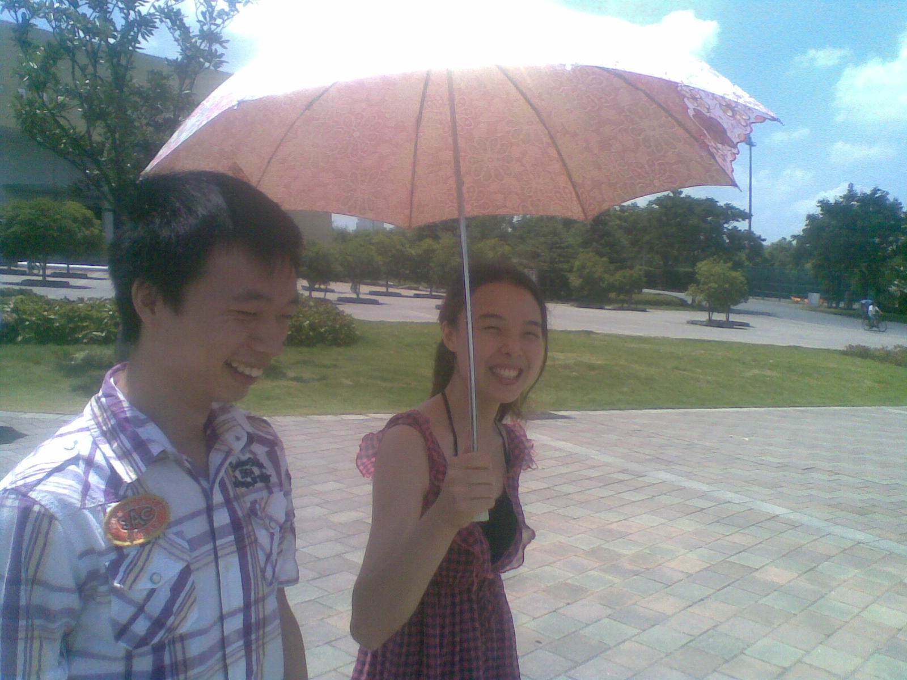

收集的图片:

2011年10月18日，中国馆

2012年8月1日，好像没拍好，汗！
由于（1）胆小（2）技术不高，所以拍的少，还很多拍的不清楚。
收集的歌曲:
嗯，这个蛮多的，也比图片质量好！上次给你听了一首《爱笑的眼睛》， 这里展示一首《幸福的轮廓》，哈哈。
还不会插入歌曲，旁边是先把歌嵌入到flash里面，然后调用flash播放的。 可是如果flash太大了，就调不出来了，只能剪辑了一个片段循环播放了。
收集的文字：
这个都在你空间里，哈哈。我特别喜欢看别人写的东西，因为它最接近人心。 记得里面你跟一个同学回寝室路上再次碰见相视一笑的场景，特形象。还发现我们都曾喜欢 余秋雨的写的文章，我最初看了《文化苦旅》，后来看了《山居笔记》，《霜冷长河》， 《千年一叹》。好像又走题了，知道你曾经也在路口徘徊，不知道等的人在哪里。知道你也 曾经一个写着文字，不知道写给谁看。（我开始考虑。。。这都是我想的，可能与事实不符，打住。）
最后附一张图片！